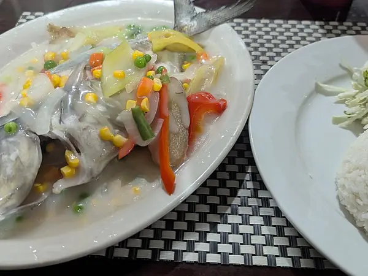

Фото: Zykasaa, CC BY-SA 4.0

Рыба на пару с лимоном
Треска на пару с лимоном и укропом, лёгкий белковый ужин
25 мин3 порц.170 ккал на порциюБ 36 · Ж 1 · У 1Интернациональная кухня
Продукты на 3 порц.
- Треска600 г
- Лимон1 шт
- Укроп0,5 пучка
- Соль1 ч. л.
- Перец чёрный молотый1 щеп.
- Оливковое масло по желанию1 ст. л.
Как готовить
- Филе трески разморозьте в холодильнике, если оно было замороженным, и обсушите полотенцем.
- Нарежьте рыбу на порционные куски, посолите и поперчите, сбрызните соком половины лимона.
- Вторую половину лимона нарежьте тонкими кружками. На каждый кусок рыбы положите кружок лимона и веточку укропа.
- Выложите рыбу в пароварку или на решётку над кастрюлей с кипящей водой, огонь средний, накройте крышкой.
- Готовьте 10-12 минут. Рыба готова, когда стала белой и легко расслаивается вилкой.
- Перед подачей сбрызните оливковым маслом, если используете.
Совет. Подойдёт любая белая рыба: минтай, хек, пикша. Тонкое филе готовится 8 минут, толстое до 15 минут, не передерживайте, иначе станет ватным.